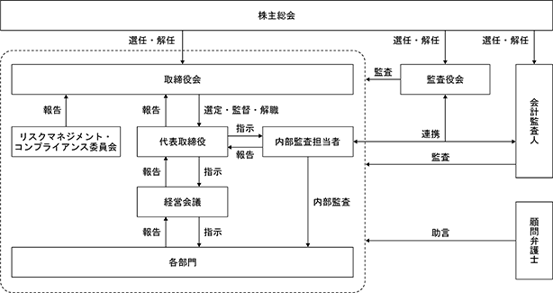

該当事項はありません。
該当事項はありません。
③ 【その他の新株予約権等の状況】
当社は、会社法に基づき新株予約権を発行しております。
(注) １．本新株予約権の名称
株式会社テクノロジーズ第１回新株予約権（以下「本新株予約権」という。）
２．本新株予約権の払込金額の総額
金13,384,000円
３．申 込 期 日
2024年４月８日
４．割当日及び払込期日
2024年４月８日
５．募 集 の 方 法
第三者割当ての方法により、以下の者に次のとおり割り当てる。
Long Corridor Alpha Opportunities Master Fund 2,240個
MAP246 Segregated Portfolio 560個
６．本新株予約権の目的である株式の種類及び数
(１)本新株予約権の目的である株式の種類及び総数は、当社普通株式280,000株とする（本新株予約権１個当たりの目的たる株式の数（以下「割当株式数」という。）は、当社普通株式100株とする。）。但し、本項第(２)号乃至第(５)号により割当株式数が調整される場合には、本新株予約権の目的である株式の総数は調整後割当株式数に応じて調整されるものとする。
(２)当社が当社普通株式の分割、無償割当て又は併合（以下「株式分割等」と総称する。）を行う場合には、割当株式数は次の算式により調整される。但し、調整の結果生じる１株未満の端数は切り捨てる。
調整後割当株式数＝調整前割当株式数×株式分割等の比率
(３)当社が第10項の規定に従って行使価額（第９項第(２)号に定義する。）の調整を行う場合（但し、株式分割等を原因とする場合を除く。）には、割当株式数は次の算式により調整される。但し、調整の結果生じる１株未満の端数は切り捨てる。なお、かかる算式における調整前行使価額及び調整後行使価額は、第10項に定める調整前行使価額及び調整後行使価額とする。
(４)本項に基づく調整において、調整後割当株式数の適用開始日は、当該調整事由に係る第10項第(２)号及び第(５)号による行使価額の調整に関し、各号に定める調整後行使価額を適用する日と同日とする。
(５)割当株式数の調整を行うときは、当社は、調整後割当株式数の適用開始日の前日までに、本新株予約権に係る新株予約権者（以下「本新株予約権者」という。）に対し、かかる調整を行う旨及びその事由、調整前割当株式数、調整後割当株式数並びにその適用開始日その他必要な事項を書面で通知する。但し、第10項第(２)号⑤に定める場合その他適用開始日の前日までに上記通知を行うことができない場合には、適用開始日以降速やかにこれを行う。
７．本新株予約権の総数
2,800個
８．各本新株予約権の払込金額
本新株予約権１個当たり金4,780円（本新株予約権の払込金額の総額 金13,384,000円）
９．本新株予約権の行使に際して出資される財産の価額又は算定方法
(１)各本新株予約権の行使に際して出資される財産は金銭とし、その価額は、本新株予約権の行使に際して出資される当社普通株式１株当たりの金銭の額（以下「行使価額」という。）に割当株式数を乗じた額とする。
(２)本新株予約権の行使価額は、5,300円とする。但し、行使価額は第10項の定めるところに従い調整されるものとする。
10．行使価額の調整
(１)当社は、当社が本新株予約権の発行後、本項第(２)号に掲げる各事由により当社の発行済普通株式数に変更を生じる場合又は変更を生じる可能性がある場合には、次に定める算式（以下「行使価額調整式」という。）をもって行使価額を調整する（以下、調整された後の行使価額を「調整後行使価額」、調整される前の行使価額を「調整前行使価額」という。）。
(２)行使価額調整式により行使価額の調整を行う場合及び調整後行使価額の適用時期については、次に定めるところによる。
① 本項第(４)号②に定める時価を下回る払込金額をもって当社普通株式を新たに発行し、又は当社の保有する当社普通株式を処分する場合（無償割当てによる場合を含む。）（但し、当社普通株式の交付と引換えに当社に取得され、若しくは当社に対して取得を請求できる証券、又は当社普通株式の交付を請求できる新株予約権（新株予約権付社債に付されたものを含む。）その他の証券若しくは権利の取得、転換若しくは行使による場合を除く。）
調整後行使価額は、払込期日（払込期間を定めた場合はその最終日とする。）の翌日以降、又はかかる発行若しくは処分につき株主に割当てを受ける権利を与えるための基準日がある場合はその日の翌日以降これを適用する。
② 株式の分割により当社普通株式を発行する場合
調整後行使価額は、株式の分割のための基準日の翌日以降これを適用する。
③ 本項第(４)号②に定める時価を下回る払込金額をもって当社普通株式の交付と引換えに当社に取得され、若しくは当社に対して取得を請求できる証券を発行（無償割当の場合を含む。）する場合又は当社普通株式の交付を請求できる新株予約権（新株予約権付社債に付されたものを含む。）その他の証券又は権利を発行（無償割当の場合を含む。）する場合
調整後行使価額は、発行される証券、新株予約権又は権利の全てが当初の取得価額で取得され又は当初の行使価額で行使され、当社普通株式が交付されたものとみなして行使価額調整式を適用して算出するものとし、かかる証券若しくは権利の払込期日又は新株予約権（新株予約権付社債に付されたものを含む。）の割当日の翌日以降、また、募集又は無償割当てのための基準日がある場合にはその日の翌日以降これを適用する。
④ 当社の発行した取得条項付株式又は取得条項付新株予約権（新株予約権付社債に付されたものを含む。）の取得と引換えに本項第(４)号②に定める時価を下回る価額をもって当社普通株式を交付する場合
調整後行使価額は、取得日の翌日以降これを適用する。
上記にかかわらず、当該取得条項付株式又は取得条項付新株予約権（新株予約権付社債に付されたものを含む。）に関して、当該調整前に上記③による行使価額の調整が行われている場合には、調整後行使価額は、当該調整を考慮して算出するものとする。
⑤ 本号①乃至③の場合において、基準日が設定され、かつ効力の発生が当該基準日以降の株主総会、取締役会その他当社の機関の承認を条件としているときには、本号①乃至③にかかわらず、調整後行使価額は、当該承認があった日の翌日以降これを適用する。この場合において、当該基準日の翌日から当該承認があった日までに本新株予約権の行使請求をした本新株予約権者に対しては、次の算出方法により、当社普通株式を交付する。
この場合、１株未満の端数を生じたときはこれを切り捨てるものとする。
(３)行使価額調整式により算出された調整後行使価額と調整前行使価額との差額が0.1円未満にとどまる場合は、行使価額の調整は行わない。但し、その後、行使価額の調整を必要とする事由が発生し、行使価額を調整する場合には、行使価額調整式中の調整前行使価額に代えて調整前行使価額からこの差額を差し引いた額を使用する。
(４)① 行使価額調整式の計算については、円位未満小数第２位まで算出し、小数第２位を四捨五入する。
② 行使価額調整式で使用する時価は、調整後行使価額が初めて適用される日（但し、上記第(２)号⑤の場合は基準日）に先立つ45取引日目に始まる30取引日（終値のない日数を除く。）の取引所における当社普通株式の普通取引の終値の単純平均値とする。この場合、単純平均値の計算は、円位未満小数第２位まで算出し、小数第２位を四捨五入する。
③ 行使価額調整式で使用する既発行普通株式数は、株主に割当てを受ける権利を与えるための基準日がある場合はその日、また、かかる基準日がない場合は、調整後行使価額を初めて適用する日の１か月前の日における当社の発行済普通株式の総数から、当該日において当社の保有する当社普通株式を控除した数とする。また、上記第(２)号②の場合には、行使価額調整式で使用する新発行・処分普通株式数は、基準日において当社が有する当社普通株式に割り当てられる当社の普通株式数を含まないものとする。
(５)上記第(２)号の行使価額の調整を必要とする場合以外にも、次に掲げる場合には、当社は、本新株予約権者と協議の上、必要な行使価額の調整を行う。
① 株式の併合、資本金の減少、会社分割、株式交換、合併又は株式交付のために行使価額の調整を必要とするとき。
② その他当社の発行済普通株式数の変更又は変更の可能性が生じる事由等の発生により行使価額の調整を必要とするとき。
③ 行使価額を調整すべき複数の事由が相接して発生し、一方の事由に基づく調整後行使価額の算出にあたり使用すべき時価につき、他方の事由による影響を考慮する必要があるとき。
(６)行使価額の調整を行うときは、当社は、調整後行使価額の適用開始日の前日までに、本新株予約権者に対し、かかる調整を行う旨並びにその事由、調整前行使価額、調整後行使価額及びその適用開始日その他必要な事項を書面で通知する。但し、上記第(２)号⑤に定める場合その他適用開始日の前日までに上記通知を行うことができない場合には、適用開始日以降速やかにこれを行う。
11．本新株予約権を行使することができる期間
2024年４月９日から2027年４月８日までとする。なお、行使期間最終日が営業日でない場合はその前営業日を最終日とする。但し、以下の期間については、行使請求をすることができないものとする。
① 振替機関が本新株予約権の行使の停止が必要であると認めた日
② 第14項に定める組織再編行為をするために本新株予約権の行使の停止が必要である場合であって、当社が、行使請求を停止する期間（当該期間は１か月を超えないものとする。）その他必要事項を当該期間の開始日の１か月前までに本新株予約権者に通知した場合における当該期間
12．その他の本新株予約権の行使の条件
各本新株予約権の一部行使はできない。
13．本新株予約権の取得
当社は、当社取締役会が決議した場合は、本新株予約権の払込期日の翌日以降、会社法第273条第２項（残存する本新株予約権の一部を取得する場合は、同法第273条第２項及び第274条第３項）の規定に従って、当社取締役会が定める取得日の２週間前までに通知又は公告を行った上で、当該取得日に本新株予約権の払込金額相当額を支払うことにより、残存する本新株予約権の全部又は一部を取得することができる。
14．組織再編行為による新株予約権の交付
当社が吸収合併消滅会社となる吸収合併、新設合併消滅会社となる新設合併、吸収分割会社となる吸収分割、新設分割会社となる新設分割、株式交換完全子会社となる株式交換、株式移転完全子会社となる株式移転、又は株式交付完全親会社の完全子会社となる株式交付（以下「組織再編行為」と総称する。）を行う場合は、当該組織再編行為の効力発生日の直前において残存する本新株予約権に代わり、それぞれ吸収合併存続会社、新設合併設立会社、吸収分割承継会社、新設分割設立会社、株式交換完全親会社、株式移転設立完全親会社又は株式交付完全親会社（以下「再編当事会社」と総称する。）は以下の条件に基づき本新株予約権者に新たに新株予約権を交付するものとする。
(１)新たに交付される新株予約権の数
本新株予約権者が有する本新株予約権の数をもとに、組織再編行為の条件等を勘案して合理的に調整する。調整後の１個未満の端数は切り捨てる。
(２)新たに交付される新株予約権の目的である株式の種類
再編当事会社の同種の株式
(３)新たに交付される新株予約権の目的たる株式の数の算定方法
組織再編行為の条件等を勘案して合理的に調整する。調整後の１株未満の端数は切り上げる。
(４)新たに交付される新株予約権の行使に際して出資される財産の価額
組織再編行為の条件等を勘案して合理的に調整する。調整後の0.1円未満の端数は切り上げる。
(５)新たに交付される新株予約権に係る行使期間、行使の条件、取得条項、組織再編行為の場合の新株予約権の交付、新株予約権証券の不発行並びに当該新株予約権の行使により株式を発行する場合における増加する資本金及び資本準備金
第11項乃至第14項、第16項及び第17項に準じて、組織再編行為に際して決定する。
15．本新株予約権の行使請求の方法
(１)本新株予約権を行使する場合、第11項に定める行使期間中に第20項記載の行使請求受付場所に対して、行使請求に必要な事項を通知しなければならない。
(２)本新株予約権を行使請求しようとする場合、前号の行使請求に必要な事項を通知し、かつ、本新株予約権の行使に際して出資の目的とされる金銭の全額を現金にて第21項に定める払込取扱場所の当社が指定する口座に振り込むものとする。
(３)本新株予約権の行使請求の効力は、第20項記載の行使請求受付場所に行使請求に必要な事項の全ての通知が到達し、かつ当該本新株予約権の行使に際して出資の目的とされる金銭の全額が前号に定める口座に入金された日に発生する。
(４)本項に従い行使請求を行った者は、その後これを撤回することはできない。
16．新株予約権証券の不発行
当社は、本新株予約権に関して、新株予約権証券を発行しない。
17．本新株予約権の行使により株式を発行する場合の増加する資本金及び資本準備金
本新株予約権の行使により当社普通株式を発行する場合において増加する資本金の額は、会社計算規則第17条第１項の規定に従い算出される資本金等増加限度額の２分の１の金額とし（計算の結果１円未満の端数を生じる場合はその端数を切り上げた額とする。）、当該資本金等増加限度額から増加する資本金の額を減じた額を増加する資本準備金の額とする。
18．株式の交付方法
当社は、本新株予約権の行使請求の効力発生後、当該本新株予約権者が指定する振替機関又は口座管理機関における振替口座簿の保有欄に振替株式の増加の記録を行うことにより株式を交付する。
19．本新株予約権の払込金額及びその行使に際して出資される財産の価額の算定理由
本発行要項及び割当先との間で締結した引受契約に定められた諸条件を考慮し、一般的な価格算定モデルであるモンテカルロ・シミュレーションを基礎として、当社の株価、ボラティリティ、当社株式の流動性、当社及び割当予定先の権利行使行動等を考慮した一定の前提を置いて評価した結果を参考に、本新株予約権１個の払込金額を金4,780円とした。
20.行使請求受付場所
三井住友信託銀行株式会社 証券代行部
21．払込取扱場所
東日本銀行 本店営業部
22．社債、株式等の振替に関する法律の適用等
本新株予約権は、社債、株式等の振替に関する法律に定める振替新株予約権とし、その全部について同法の規定の適用を受ける。また、本新株予約権の取扱いについては、株式会社証券保管振替機構の定める株式等の振替に関する業務規程、同施行規則その他の規則に従う。
23．振替機関の名称及び住所
株式会社証券保管振替機構
東京都中央区日本橋兜町７番１号
24．その他
(１)会社法その他の法律の改正等、本要項の規定中読替えその他の措置が必要となる場合には、当社は必要な措置を講じることができる。
(２)上記のほか、本新株予約権の発行に関して必要な事項の決定については、当社代表取締役社長に一任する。
(３)本新株予約権の発行については、金融商品取引法に基づく届出の効力の発生を条件とする。
該当事項はありません。
(注)１．有償第三者割当増資
割当先 石原慎也
発行価格 219,298円
資本組入額 219,298円
２．有償第三者割当増資
割当先 株式会社エコ革、伊藤高雄、伊藤繁三
発行価格 214,912円
資本組入額 214,912円
３．2020年12月23日開催の臨時株主総会の決議に基づき、2021年１月25日付で、資本金150,000千円をその他の資本剰余金に振替え、振替え後のその他資本剰余金150,000千円を繰越利益剰余金に振替えることにより欠損填補を行っております。（減資割合33.7％）
４．有償第三者割当増資
割当先 石原慎也
発行価格 220,264円（小数点以下を切り捨てて記載しております。）
資本組入額 220,264円（小数点以下を切り捨てて記載しております。）
５．2022年９月６日開催の取締役会決議により、2022年９月27日付で普通株式１株につき200株の割合で株式分割を行っております。
６．有償一般募集（ブックビルディング方式による募集）
発行価格 1,000円
引受価額 920円
資本組入額 460円
払込金総額 276,000千円
７．有償第三者割当（オーバーアロットメントによる売出しに関連した第三者割当増資）
割当価格 920円
資本組入額 460円
割当先 東洋証券株式会社
(注) 自己株式102株は、「個人その他」に1単元、「単元未満株式の状況」に2株含まれております。
2024年１月31日現在
(注) １．上記のほか当社が保有している自己株式102株があります。
２．持株比率は自己株式を控除して算出しております。
(注) 単元未満株式には、当社所有の自己株式2株を含めて記載しております。
2024年１月31日現在
(注)１．単元未満株式の買取請求に伴い、当事業年度末現在の自己株式数は102株となっています。
２．第10期第３四半期会計期間末時点において、当社の連結子会社である株式会社エコ革は、その保有する当社株式の全部を売却しております。
該当事項はありません。
該当事項はありません。
(注) 当期間における取得自己株式には、2024年２月１日から有価証券報告書提出日までの単元未満株式の買取りによる株式数は含めておりません。
(注) １．当期間における保有自己株式数には、2024年２月１日から有価証券報告書提出日までの単元未満株式の買取りによる株式数は含めておりません。
当社は、株主に対する利益還元を経営上の重要課題の一つとして認識しておりますが、財務体質の改善に加えて事業拡大のための内部留保の充実等を図り、収益力強化と事業拡大のための投資に充当していくことが株主に対する最大の利益還元につながると考えております。このことから、創業以来配当は実施しておらず、今後についても現時点において配当実施の可能性及び実施時期は未定であります。
なお、内部留保資金につきましては、財務体質の強化と人員の拡充・育成をはじめとした収益基盤の多様化や収益力強化のための投資に活用する方針であります。将来的には、収益力の強化や事業基盤の整備を実施しつつ、内部留保の充実状況及び企業を取り巻く事業環境を勘案したうえで、株主に対して安定的かつ継続的な利益還元を実施する方針でありますが、本書提出日現在において配当実施の可能性及びその実施時期等については未定であります。
なお、当社は、剰余金の配当を行う場合には、年１回の剰余金の配当を期末に行うことを基本としており、期末配当の決定機関は株主総会であります。また、当社は、取締役会の決議によって、毎年７月31日を基準日として中間配当をすることができる旨を定款に定めております。
当社のコーポレート・ガバナンスに関する基本的な考えは、お客様に信頼される企業経営の推進にあると考えております。これを経営における重要な課題であると認識し、経営環境の変化に応じた経営組織の整備・スリム化、公正性の確保、法令遵守・定款にもとづく経営判断のスピード化、合理化に努力し、企業価値の一層の向上を図ってまいります。
当社では、効果的かつ効率的な企業経営システムを構築し、常に組織の見直しと諸制度の整備に取り組んでおります。
(イ)取締役会
当社の取締役会は、代表取締役社長良原広樹が議長を務め、「(2) 役員の状況」に記載の全ての取締役で構成されております。原則として月１回開催される定時取締役会のほか、効率的かつ迅速な意思決定を行えるよう、必要に応じて臨時取締役会を開催しております。取締役会は、取締役及び監査役が出席し、法令、定款及び取締役会規程等に定められた事項の審議・決定並びに取締役の業務執行状況を監督・監視しております。また、社外取締役は、社外の第三者の視点で取締役会への助言及び監視を行っております。
(ロ)監査役会
当社の監査役会は、社外監査役である常勤監査役川合史郎が議長を務め、「(2) 役員の状況」に記載の全ての監査役で構成されております。原則として月１回開催し、法令、定款及び監査役会規程等に従い、監査役の監査方針、年間の監査計画等を決定しております。なお、監査内容につきましては、各監査役が毎月、監査役会に報告しております。
(ハ)会計監査人
当社は、会計監査人として、監査法人銀河と監査契約を締結しており、会計監査を受けております。
(ニ)経営会議
当社は、代表取締役社長良原広樹を議長とし、当社の常勤取締役及び株式会社Cotoriの代表取締役・取締役で構成され、当社の常勤監査役もオブザーバーとして参加する経営会議を設置しております。原則として隔週開催しており、経営に関する重要事項の協議や共有、またグループ間の情報共有を行っております。
(ホ)内部監査
当社における内部監査は、当社が比較的小規模の会社・組織であることから、独立した内部監査部門は設置せずに、代表取締役社長が選任した内部監査担当者２名により実施しております。年間の内部監査計画に則り全部門に対して監査を実施し、監査結果について代表取締役社長及び監査役に都度報告する体制となっております。内部監査担当者が所属する部門については、相互監査が可能な体制にて運用しております。
(ヘ)リスクマネジメント・コンプライアンス委員会
当社は、代表取締役社長を委員長とし、委員である常勤取締役、常勤監査役、内部監査担当者の他、事務局である経営管理部門員で構成されるリスクマネジメント・コンプライアンス委員会を設置しております。同委員会は、原則四半期ごとに定例開催する他、必要に応じて臨時に開催しております。同委員会では、緊急事態が発生した場合の対応を行うほか、当社のリスク及びコンプライアンスの管理に係る事項の検討、審議を行い、当社グループにおけるリスク及びコンプライアンス管理体制の構築を図っております。
当社は会社法に基づく機関として、株主総会、取締役会、監査役会及び会計監査人を設置するとともに、代表取締役社長が任命する内部監査担当者による内部監査を実施することで、経営に対する監督の強化を図っております。
これら各機関の相互連携によって、経営の健全性・効率性を確保することが可能になると判断し、当該体制を採用しております。
当社のコーポレート・ガバナンス体制の概要は以下のとおりであります。

当社は、会社法に基づく業務の適正性を確保するための体制として、以下のとおり「内部統制システムに関する基本方針」を定め、当該基本方針に基づき内部統制システムの整備・運用を行っております。
１．当社の取締役及び従業員並びに当社子会社の取締役及び従業員（以下、「取締役等」という。）の職務執行が法令・定款に適合することを確保するための体制
当社及び当社子会社（以下総称して、「当社グループ」という。）は、当社の掲げる企業理念「テクノロジー×エンターテインメントで笑顔溢れるより便利な世の中を創造する」を共通の志として、社会のルールを尊重し、コンプライアンスを最優先にする組織と風土を何よりも重視する。
当社グループは、当社の定めたコンプライアンス体制にかかる各種規程を取締役等が法令・定款及び社会規範を遵守した行動をとるための行動規範とする。その徹底を図るため、当社の管理部門においてコンプライアンスの取り組みを横断的に総括することとし、同部門により、定期的に教育・研修活動を行うとともに、当社グループ全体のコンプライアンス体制の構築・推進を行う。
当社グループにおいて内部監査担当者を選任し、管理部門と連携の上、当社グループのコンプライアンスの状況及び業務の適正性に関する内部監査を実施する。これらの活動は当社のリスクマネジメント・コンプライアンス委員会、経営会議、取締役会及び監査役会に報告するものとする。
必要に応じて、当社子会社に取締役を派遣し、適正な業務執行・意思決定や監督を実施する。また、当社の管理部門は、必要に応じて、当社子会社に対する助言、指導又は支援を実施するものとする。
必要に応じて、当社子会社に監査役を派遣し、監査を実施するものとする。
法令上疑義のある行為等について当社グループの従業員が直接情報提供を行う手段として、管理部門担当取締役及び常勤の監査役並びに外部弁護士事務所に対するホットラインを設置・運営する。
２．当社の取締役及び当社子会社の取締役の職務の執行に係る情報の保存及び管理に関する体制
当社グループの取締役は、各社の株主総会議事録、取締役会議事録、重要な意思決定に関する文書（電磁的記録を含む。以下同じ）、その他取締役の職務の執行に係る重要な情報等（以下、「文書等」）を法令及び社内規程に従い保存・管理する。社内規程に従い、取締役、監査役及び内部監査担当が常時上記の文書等を閲覧できるものとする。
３．当社及び当社子会社のリスク管理体制
当社グループのリスク管理体制に係る基本方針は、当社の取締役会において決定されるものとする。
コンプライアンス、環境、災害、品質、情報セキュリティ、個人情報保護及び知的財産権等に係るリスクについては、四半期毎に開催されるリスクマネジメント・コンプライアンス委員会の議案とし、それぞれの当社担当部署及び当社子会社にて、適宜対応を行い、組織横断的なリスク状況の監視及びグループ全体的な対応は当社の管理部門が行い、リスクマネジメント・コンプライアンス委員会で改善状況につき報告を行うものとする。
新たに生じたグループ経営上の重要なリスクについては、当社の取締役会において速やかに対応責任者となる取締役を選定し、対応について決定するものとする。
４．当社の取締役及び当社子会社の取締役の職務の執行が効率的に行われることを確保するための体制
当社グループの取締役会は、取締役の職務の執行が効率的に行われることを確保するための体制構築の基礎として、取締役会規程を遵守して、毎月１回定時取締役会を開催する他、必要に応じて臨時取締役会を開催することで、取締役の職務の執行を図る。
取締役の職務の執行に必要な組織及び組織の管理、並びに職務権限、責任については、当社グループ各社において、取締役会規程、職務権限規程、業務分掌規程等の社内規程に従って定め、業務の組織的かつ能率的な運営を図る。
中長期の経営方針の下で、年度計画を立案し、月次で予算管理を行いながら、当該計画達成に向けて社内の意思統一を図る。
５．当社子会社の取締役の職務の執行に係る事項の当社への報告に関する体制
当社子会社の業務執行の状況については、定期的に当社の取締役会において報告されるものとする。
当社子会社を担当する業務執行取締役は、適宜当社子会社から業務執行の状況の報告を求めるものとする。
関係会社管理規程において、当社子会社の経営に関わる一定の事項については、当社の関連部署との協議・報告又は当社の取締役会の承認を義務付けるものとする。
内部監査担当者は、当社子会社に対する内部監査の結果を、適宜、当社の取締役会及び監査役会に報告するものとする。
６．当社及び当社子会社からなる企業集団における業務の適正を確保するための体制
当社は、関係会社管理規程により、当社子会社に関して、コンプライアンス確保、会計基準の同一性確保等、グループ一体となった内部統制の維持・向上を図る。当社の業務執行取締役に、当社グループ全体の法令遵守体制、リスク管理体制を構築する権限と責任を与えることとし、管理部門はこれらを横断的に推進し、管理する。
７．当社の監査役会がその職務を補助すべき取締役及び従業員を置くことを求めた場合における、当該取締役及び従業員に関する体制並びにその取締役及び従業員の当社の取締役からの独立性に関する事項
監査役は、当社の取締役及び従業員に対して監査業務に必要な事項を命令することができるものとし、監査役会より監査業務に必要な命令を受けた取締役及び従業員はその命令のもと監査役の業務を補助するものとし、これに関して当社の取締役等の指揮命令を受けないものとする。
８．取締役及び従業員が監査役会に報告するための体制
業務執行取締役は、監査役会に対して、法定の事項に加え、当社グループに重大な影響を及ぼす事項、内部監査の実施状況等を、業務執行取締役及び従業員が速やかに報告する体制を整備する。
内部監査担当者は、定期的及び必要と判断する場合は時宜に応じて監査役会に対し、当社グループにおける内部監査の結果その他活動状況の報告を行うものとする。
９．当社の監査役に報告をした者が当該報告をしたことを理由として不利な取扱いを受けないことを確保するための体制
当社グループにおいては通報者に不利益が及ばないように、いかなる報告も、それが不正の意図を有するものでない限り、それにより不利益を受けないことを内部通報規程等に明記し、従業員に対して周知徹底する。
10．当社の監査役会及び監査役の職務の執行について生ずる費用債務の処理に係る方針に関する方針、その他監査役会の監査が実効的に行われることを確保するための体制
監査役会及び監査役がその職務について生ずる費用の前払いまたは償還等の請求をしたときは、速やかに当該費用または債務を処理するものとする。
監査役会は、当社子会社の監査役（若しくはこれらに相当する者）及び内部監査担当者との意思疎通及び情報の交換がなされるように努めるものとする。
監査役会は、定期的及び必要と判断する場合は時宜に応じて代表取締役社長及び会計監査人と意見を交換する機会を設けるものとする。
11．財務報告の信頼性を確保するための体制
取締役会は、当社グループの財務報告の信頼性確保及び金融商品取引法に定める内部統制報告書の有効かつ適切な提出のため、内部統制システムの整備・構築を行い、また、内部統制システムと金融商品取引法及びその他の関係法令との整合性を確保するために、その仕組みを継続的に評価し必要な是正を行う。
12．反社会的勢力排除に向けた基本的な考え方とその整備状況
当社グループは、暴力団追放運動推進センターに加盟し、その他専門機関と連携し、社会の秩序や安全に脅威を与える反社会的勢力及び団体とは一切関係を持たず、さらに反社会的勢力及び団体からの要求を断固拒否し、これらと係わりのある企業、団体、個人とはいかなる取引も行わないとする方針を堅持する。
当該基本的な考え方に基づく反社チェックマニュアルを整備し、取引先の属性チェックを行う。
当社グループでは、「リスクマネジメント・コンプライアンス規程」を定め、代表取締役社長を委員長とするリスクマネジメント・コンプライアンス委員会を設置し、全社的なリスクマネジメントの体制を整備しております。また実際にリスクが発生した場合は、速やかに代表取締役社長への報告を行い、代表取締役社長の指示の下、当該リスクへの対応を行うこととしております。
本書提出日現在において、当社は社外取締役を１名、社外監査役を３名選任しております。当社は、経営の意思決定機能を持つ取締役会に対し、社外取締役を選任し、かつ監査役を社外監査役とすることで経営への監視機能を強化しております。
コーポレート・ガバナンスにおいては、社外からの客観的かつ中立な立場での監督機能が重要であると考え、社外取締役及び社外監査役は取締役会に出席し、第三者の立場で提言を行い、社外監査役は定期的に監査を実施することによって、外部からの監督機能の実効性を十分に確保しております。
また、社外取締役、社外監査役との間には、当社との間に人的関係、資本的関係又は取引関係その他利害関係はありません。
社外取締役及び社外監査役を選任するための独立性に関する明確な基準は定めておりませんが、当社と特別な利害関係がなく、高い見識に基づき当社に対して助言や経営監視ができる人材を選任しております。
当社と各社外取締役及び各社外監査役は、会社法第427条第１項に基づき、会社法第423条第１項の損害賠償責任を限定する契約を締結しております。当該契約に基づく損害賠償責任の限度額は、法令が定める最低責任限度額としております。
当社は、当社及び子会社の取締役、監査役を被保険者とする、会社法第430条の３第１項に規定する役員等賠償責任保険契約を保険会社との間で締結しており、保険料は全額当社が負担しております。
当該保険契約の内容の概要は、被保険者が業務に起因して損害賠償請求がなされたことにより被保険者が負担することとなる損害賠償金及び争訟費用等の損害を填補するものであります。
当社の取締役は７名以内とする旨を定款に定めております。
当社の取締役の選任決議は、議決権を行使することができる株主の議決権の３分の１以上を有する株主が出席し、その議決権の過半数をもって行う旨定款に定めております。また、取締役の選任については、累積投票によらないものとする旨を定款に定めております。
当社は、株主への機動的な利益還元を行うため、会社法第454条第５項の規定により、取締役会の決議によって中間配当を行うことができる旨を定款で定めております。
当社は、機動的に自己株式の取得を行うことを目的として、会社法第165条第２項の規定に基づき、取締役会の決議をもって市場取引等により自己の株式を取得することができる旨を定款で定めております。
当社は、会社法第309条第２項に定める株主総会の特別決議要件について、議決権を行使することができる株主の議決権の３分の１以上を有する株主が出席し、その議決権の３分の２以上をもって行う旨定款で定めております。これは、株主総会における特別決議の定足数を緩和することにより、株主総会の円滑な運営を行うことを目的とするものであります。
男性
(注) １．取締役賀島義成は、社外取締役であります。
２．監査役川合史郎、太田祐司及び磯巧は、社外監査役であります。
３．2024年４月26日開催の定時株主総会終結の時から選任後１年以内に終了する事業年度のうち、最終のものに関する定時株主総会終結の時までであります。
４．2022年９月26日開催の臨時株主総会終結の時から選任後４年以内に終了する事業年度のうち、最終のものに係る定時株主総会終結の時までであります。
当社の社外取締役は１名、社外監査役は３名であります。
社外取締役賀島義成は、企業の経営管理及び内部統制に関する幅広い知見と専門知識を有すると共に、エンターテインメント業界にてソフトウェア開発事業を手掛けており、独立の立場から当社の経営に対して有益な助言・監督を行う機能及び役割を担う目的により、2020年８月１日より当社社外取締役に就任しております。
なお、社外取締役と当社との間には、人的関係、資本関係、取引関係、その他の利害関係はありません。
社外監査役川合史郎は、公認会計士として監査法人における監査業務経験を有しており、財務及び会計に関する相当程度の知見を有しており、当社の事業運営への外部からの視点に基づく適切な監督・助言をいただいております。
社外監査役磯巧は、公認会計士として企業会計に精通し、長年に渡る上場準備企業へのアドバイザリーサービスの経験を有しております。また、過去に取締役として上場実績経験があるため、その豊富な知識と経験に基づく専門的・多角的な見地から当社に対する監督・助言をいただいております。
社外監査役太田祐司は、財務及び経営管理に関する豊富な経験と、事業マネジメントに関する幅広い知識を有しており、当社の事業運営への外部からの視点に基づく適切な監督・助言をいただいております。
なお、社外監査役と当社との間には、人的関係、資本関係、取引関係、その他の利害関係はありません。
当社は、社外取締役を選任するための会社からの独立性に関する基準又は方針として明確に定めたものはありませんが、その選任にあたっては、一般株主と利益相反の生じるおそれがないよう、東京証券取引所の独立役員の独立性に関する判断基準等を参考にしております。
社外取締役及び社外監査役ともに、独立した立場から、取締役会の牽制及び監視を行っております。また、社外監査役３名で構成される監査役会は、内部監査担当者との意見交換等により相互の連携を図りながら、適正かつ効果的な監査実施のための環境整備を行っております。
(3) 【監査の状況】
当社における監査役監査は、常勤監査役１名及び非常勤監査役２名（うち社外監査役３名）により実施しており、監査役会が定めた監査方針及び監査計画に基づき、監査を行っております。このうち常勤監査役の川合史郎及び非常勤監査役の磯巧は公認会計士資格を有し、財務及び会計に関して相当程度の知見を有しております。
常勤監査役は、取締役会等の重要な会議への出席、取締役等との面談、重要な決裁書類等の閲覧、内部統制システムの運用状況について適宜監視をしております。非常勤監査役は、取締役会等の重要会議に出席し、経営全般に関する客観的かつ公正な意見の開陳を行っております。また毎月１回開催するほか、必要に応じて開催する監査役会において、相互に職務の状況について報告を行うことにより、情報の共有・監査業務の認識の共有を行っております。その他、リスクマネジメント・コンプライアンス委員会等の重要会議に出席し、必要があると認めたときは意見を述べております。
また、当社の監査役は、内部監査担当者、会計監査人と定期的に意見交換等を行い、三者間で情報共有することで相互連携を図っております。また、内部監査担当者と監査役は、内部監査の実施状況について、監査上の問題点や課題等の情報を都度共有することにより、連携体制を構築しております。
当事業年度においては、監査役会を16回開催しており、個々の監査役の出席状況は以下のとおりです。
監査役会においては、主に、監査計画及び監査方針の策定、重要会議への出席及び重要書類の閲覧に基づく監査上の重要事項についての協議及び検討、監査報告書の作成、会計監査人の監査の方法及び結果の相当性の評価等を行っております。
当社における内部監査は、当社が比較的小規模の会社・組織であることから、独立した内部監査部門は設置せずに、代表取締役社長が選任した内部監査担当者２名により実施しております。年間の内部監査計画に則り全部門に対して監査を実施し、監査結果について代表取締役社長及び監査役に都度報告する体制となっております。内部監査担当者が所属する部門については、相互監査が可能な体制にて運用しております。
また、内部監査担当者は、監査役会及び会計監査人と連携し、三者間で定期的に会合を開催して課題・改善事項等の情報共有を図るとともに、効率的かつ効果的な監査を実施するように努めております。
監査法人銀河
４年間
代表社員 業務執行社員：柄澤 明
業務執行社員 ：四ツ橋 学
当社の会計監査業務に係る補助者は、公認会計士17名であります。
当社は、公益社団法人日本監査役協会が公表する「会計監査人の評価及び選定基準策定に関する監査役等の実務指針」を踏まえ、当監査法人の品質管理体制、独立性及び専門性等を総合的に勘案し、当監査法人を選任しております。
また、当社の監査役会は、会計監査人が会社法第340条第１項各号のいずれかに該当すると認められる場合、監査役全員の同意により解任いたします。
加えて、上記の場合の他、会計監査人による適正な監査の遂行が困難であると認められた場合など、その必要があると判断した場合、株主総会に提出する会計監査人の解任または会計監査人を再任しないことに関する議案の内容は、監査役会が決定いたします。
当社の監査役及び監査役会は、公益社団法人日本監査役協会が公表する「会計監査人の評価及び選定基準策定に関する監査役等の実務指針」を踏まえ、当監査法人の品質管理体制、独立性、専門性、監査体制、監査計画の内容及び実施状況、会計監査の職務遂行状況が適切であるかどうかについて必要な検証を行った上で、総合的に評価しております。その結果、当監査法人が適任であると判断しております。
該当事項はありません。
該当事項はありません。
当社の事業規模や特性に照らして、監査計画、監査内容、監査日数等を勘案し、双方協議のうえ、監査役会の同意を得て、監査報酬を決定しております。
当社の監査役会は、公益社団法人日本監査役協会が公表する「会計監査人との連携に関する実務指針」を踏まえ、会計監査人の監査計画の内容、職務遂行状況や報酬見積の算定根拠などを確認し、検討した結果、会計監査人の報酬額について会社法第399条第１項の同意を行っております。
(4) 【役員の報酬等】
当社の取締役の金銭報酬の限度額は、2020年４月27日開催の第６回定時株主総会において、年額50,000千円以内と決議されております。当該定時株主総会終結時点の取締役の員数は４名（うち、社外取締役は１名）です。
監査役の金銭報酬の限度額は、2020年４月27日開催の第６回定時株主総会において年額10,000千円以内と決議されております。当該定時株主総会終結時点の監査役の員数は３名（うち、社外監査役は３名）です。
当社は、取締役及び監査役の個人別の報酬等の内容に係る決定方針を「役員報酬に関する規則」において定めております。
取締役の報酬は、その総枠について株主総会の決議によって決め、常勤取締役については、会社の業績、取締役の職責・業績、世間報酬水準その他経営環境等を考慮し、非常勤取締役については、当該取締役の社会的地位及び会社への貢献度等を斟酌した上で、当社の取締役会で協議し決定いたします。役員の報酬は、月額報酬及び役員賞与により構成され、月額報酬は役員報酬一本とし、業績連動報酬は導入しておりません。なお、当事業年度において役員賞与の支給はございません。取締役の個人別の報酬等の内容の決定に当たっては、世間水準及び従業員給与との均衡を考慮して、役員の職位、経営能力、功績などを考慮し基本報酬を定めることを確認しているため、取締役会はその内容が決定方針に沿うものであると判断しております。
監査役の報酬は、その総枠について株主総会の決議によって決め、常勤・非常勤による関与度等を踏まえつつ監査役の協議により決定いたします。
役員報酬等の総額が１億円以上であるものが存在しないため、記載しておりません。
該当事項はありません。
(5) 【株式の保有状況】
当社は、保有目的が純投資目的の株式及び純投資目的以外の目的の株式のいずれも保有しておりません。
②保有目的が純投資目的以外の目的である投資株式
該当事項はありません。
③保有目的が純投資目的である投資株式
該当事項はありません。